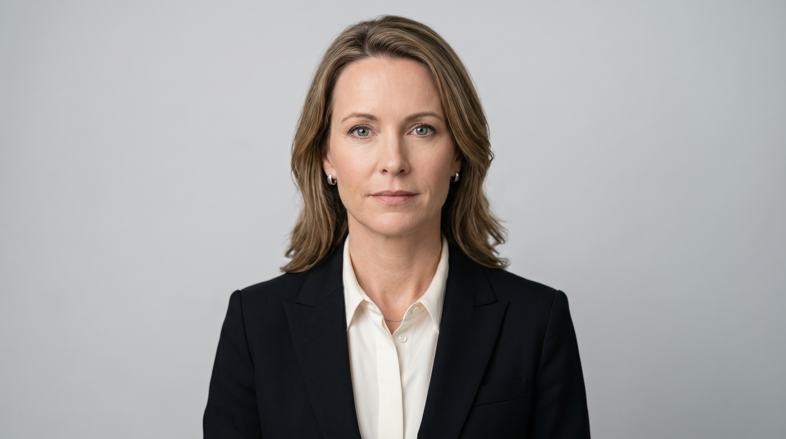
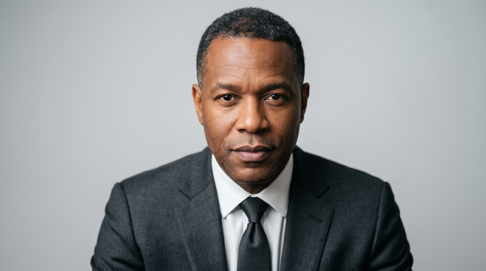
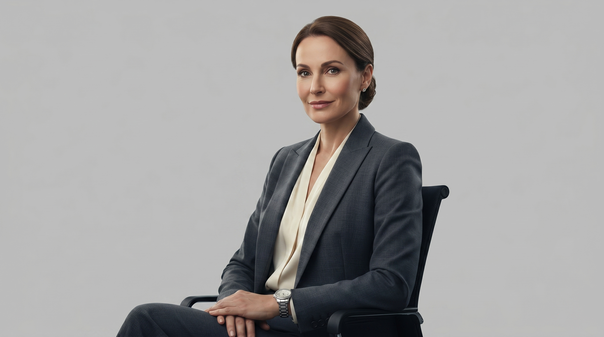
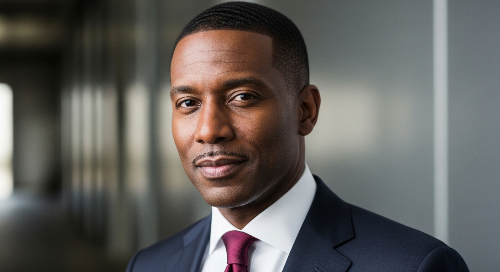
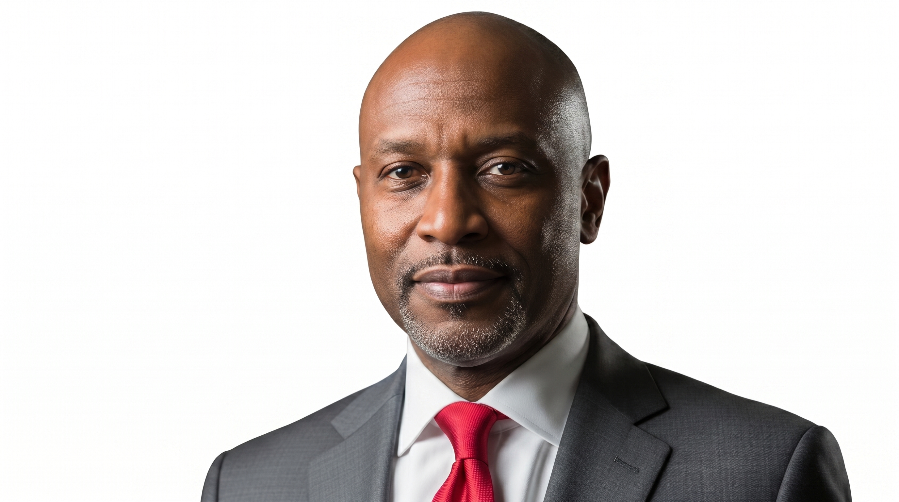
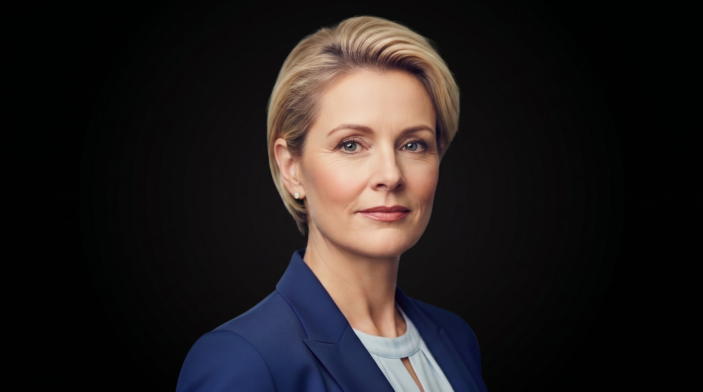

Our Company ▼
Our Operations ▼
Investors ▼
Sustainability ▼
News & Stories ▼
Corelix is led by an experienced global team with decades of combined expertise across oil & gas, finance, operations, legal affairs, and international markets. Click any card to read the full biography.
25+ years in oil and gas across production, manufacturing, and global operations.
George Maxwell brings over 25 years of experience in the oil and gas industry, spanning production, manufacturing, and global operations. As CEO of Corelix Catalyst Group, he leads strategic growth and international expansion. He has held senior leadership roles across Europe, Africa, and Asia, with strong expertise in finance and business development. His global insight and industry experience drive the company's long-term vision and performance.
40+ years of international oil and gas operations across onshore and offshore environments.
James Hill brings over 40 years of international experience in oil and gas operations, spanning onshore and offshore environments. At Corelix Catalyst Group, he oversees operational strategy and execution across global activities. His expertise covers the full project lifecycle, including exploration, development, and production management. His leadership ensures efficient operations, technical excellence, and consistent delivery across all projects.
25+ years in oil and gas finance with expertise in capital markets, reporting, and compliance.
Ronald Williams brings over 25 years of experience in finance within the oil and gas industry, with expertise in capital markets, reporting, and compliance. At Corelix Catalyst Group, he leads financial strategy, ensuring strong governance and sustainable growth. He has held senior financial leadership roles across international organisations and complex markets. His expertise supports sound financial management and long-term value creation.
Extensive experience in legal strategy, corporate governance, and international energy operations.
Matthew Powers brings extensive experience in legal strategy, corporate governance, and international energy operations. At Corelix Catalyst Group, he oversees legal affairs, ensuring compliance and supporting strategic decision-making. He has held senior legal roles in multinational organisations and leading law firms. His expertise strengthens the company's regulatory framework and global business operations.
30+ years in accounting and finance within the oil and gas industry.
Lynn Willis brings over 30 years of experience in accounting and finance within the oil and gas industry. At Corelix Catalyst Group, she oversees accounting operations, financial reporting, and internal controls. She has held senior roles across international and emerging energy companies, as well as public accounting. Her expertise ensures accuracy, compliance, and strong financial discipline across the organisation.

15+ years in finance and treasury within the energy sector.
Julie Hill brings over 15 years of experience in finance and treasury within the energy sector. At Corelix Catalyst Group, she manages treasury operations, liquidity planning, and financial risk. She has worked with publicly traded companies and multinational clients across diverse markets. Her expertise supports strong financial stability and efficient capital management.

25+ years in oil and gas with expertise across the full project lifecycle.
James Waithman brings over 25 years of experience in oil and gas, with expertise across the full project lifecycle from development to production. At Corelix Catalyst Group, he oversees technical services, ensuring operational efficiency and performance excellence. He has held senior roles in engineering, construction, and production across major international projects. His technical leadership supports the delivery of reliable and high-quality solutions globally.
40+ years in the international oil and gas industry with deep expertise in geoscience.
Dan Maxwell brings over 40 years of experience in the international oil and gas industry, with deep expertise in geoscience and subsurface analysis. At Corelix Catalyst Group, he leads subsurface strategy, supporting exploration insights and process optimisation. His background spans seismic interpretation, field development, and project evaluation across global regions. His expertise strengthens data-driven decision-making and operational efficiency.
20+ years in oil and gas, spanning concept development through to operations.
Arlene Davitt brings over 20 years of experience in oil and gas, spanning concept development through to operations. At Corelix Catalyst Group, she oversees production and development activities across key projects. She has worked with leading international energy companies, with strong experience in West Africa. Her expertise ensures efficient project execution and optimised production performance.
20+ years of international experience in technical leadership, exploration, and business development.
Casey Donohue brings over 20 years of international experience in technical leadership, exploration, and business development. At Corelix Catalyst Group, he drives innovation, growth strategy, and new business opportunities. He has held senior roles across global energy companies, leading exploration and project development initiatives. His expertise supports strategic expansion and long-term value creation.

24+ years in human resources with a strong background in global talent management.
Lisa Ruiz brings over 24 years of experience in human resources, with a strong background in global talent management and organisational development. At Corelix Catalyst Group, she leads HR strategy, fostering a high-performance and inclusive work environment. She has held senior HR leadership roles across multinational and publicly traded organisations. Her expertise drives talent growth, operational excellence, and a strong corporate culture.

15+ years in commercial strategy, corporate finance, and business development.
Ed Cozens brings over 15 years of experience in commercial strategy, corporate finance, and business development within the energy sector. At Corelix Catalyst Group, he leads commercial operations and long-term strategic planning. He has played a key role in driving growth and managing international business operations. His expertise supports value creation, market expansion, and strategic decision-making.
Extensive experience in corporate leadership, government relations, and international energy negotiations.
Toufic Nassif brings extensive experience in corporate leadership, government relations, and international energy negotiations. At Corelix Catalyst Group, he leads corporate affairs and strategic partnerships with government and industry stakeholders. He has held executive roles across global energy companies, managing complex commercial operations and negotiations. His expertise supports strong partnerships, regulatory alignment, and global business expansion.
35+ years of global experience in the oil and gas industry across multiple international markets.
Andrew L. John brings over 35 years of global experience in the oil and gas industry, with leadership roles across multiple international markets. As Chairman of Corelix Catalyst Group, he provides strategic direction and governance oversight. He has led major operations across Africa, Asia, and other key regions, driving growth and operational excellence. His extensive experience strengthens the company's leadership and long-term vision.
40+ years in the global energy industry with leadership roles across North America, Europe, and the Middle East.
Edward LaFehr brings over 40 years of experience in the global energy industry, with leadership roles across North America, Europe, and the Middle East. As a Director at Corelix Catalyst Group, he contributes strategic oversight and industry expertise. He has held senior executive positions, including CEO and COO roles in major international energy companies. His experience supports strong governance, operational insight, and long-term growth strategy.
CEO and Board Director — 25+ years in oil and gas across Europe, Africa, and Asia.
George Maxwell serves on the Board as both CEO and Director, bringing over 25 years of experience in the oil and gas industry spanning production, manufacturing, and global operations. As CEO of Corelix Catalyst Group, he leads strategic growth and international expansion. His global insight and industry experience drive the company's long-term vision and performance.

25+ years in finance, investment banking, and strategic advisory across international markets.
Fabrice Nze-Bekale brings over 25 years of experience in finance, investment banking, and strategic advisory across international markets. As a Director at Corelix Catalyst Group, he provides valuable insight into corporate strategy and financial growth. He has held executive and board roles across banking, mining, and investment institutions in Africa and Europe. His expertise supports strong governance, investment strategy, and regional market expansion.

30+ years in finance, accounting, and corporate leadership within the energy industry.
Cathy Stubbs brings over 30 years of experience in finance, accounting, and corporate leadership within the energy industry. As a Director at Corelix Catalyst Group, she provides strong oversight in financial management and governance. She has held senior executive roles, including CFO and President, across international energy organisations. Her expertise supports risk management, strategic planning, and long-term organisational stability.
We are always looking for talented, driven individuals who want to make a real impact in the global energy and chemicals industry.
View Open Positions →